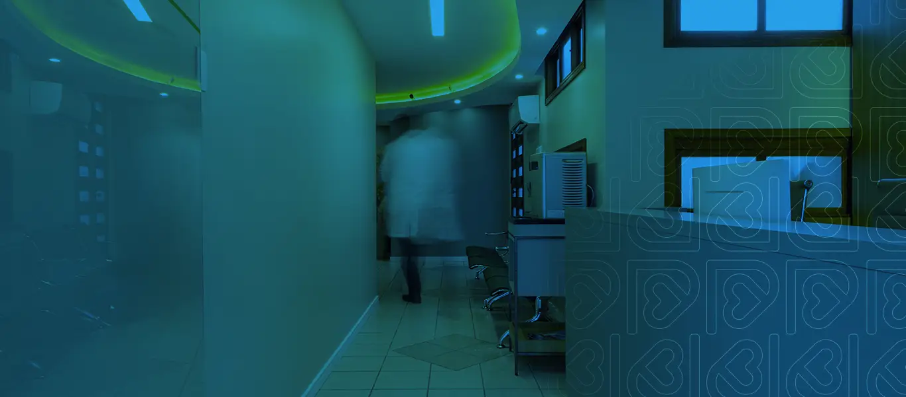
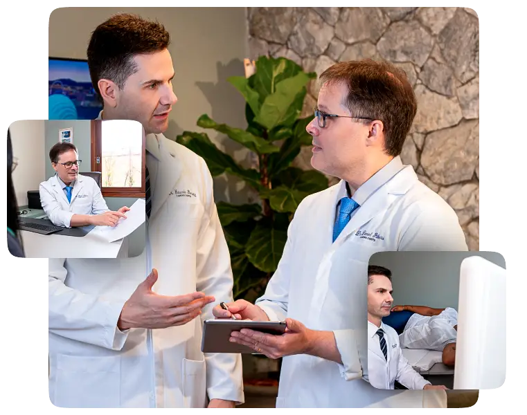
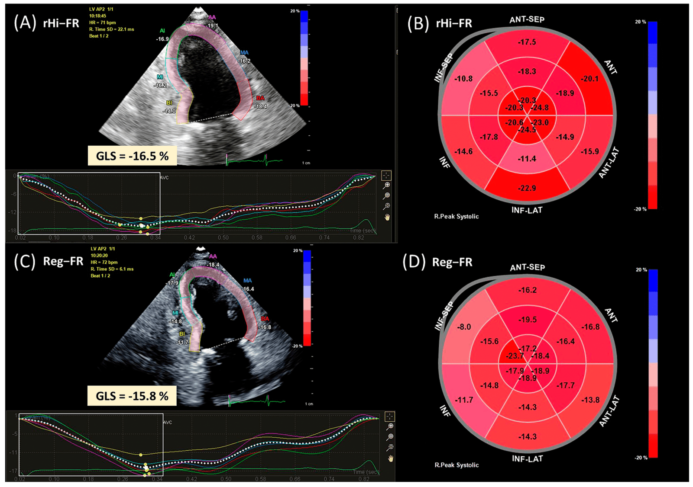
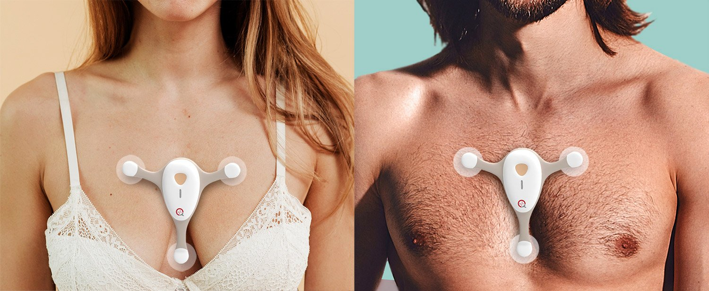
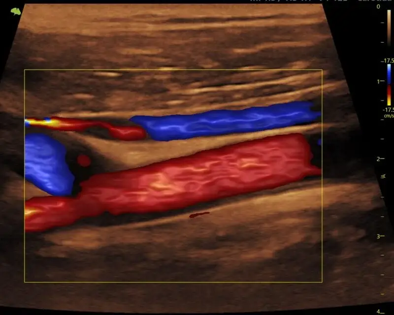
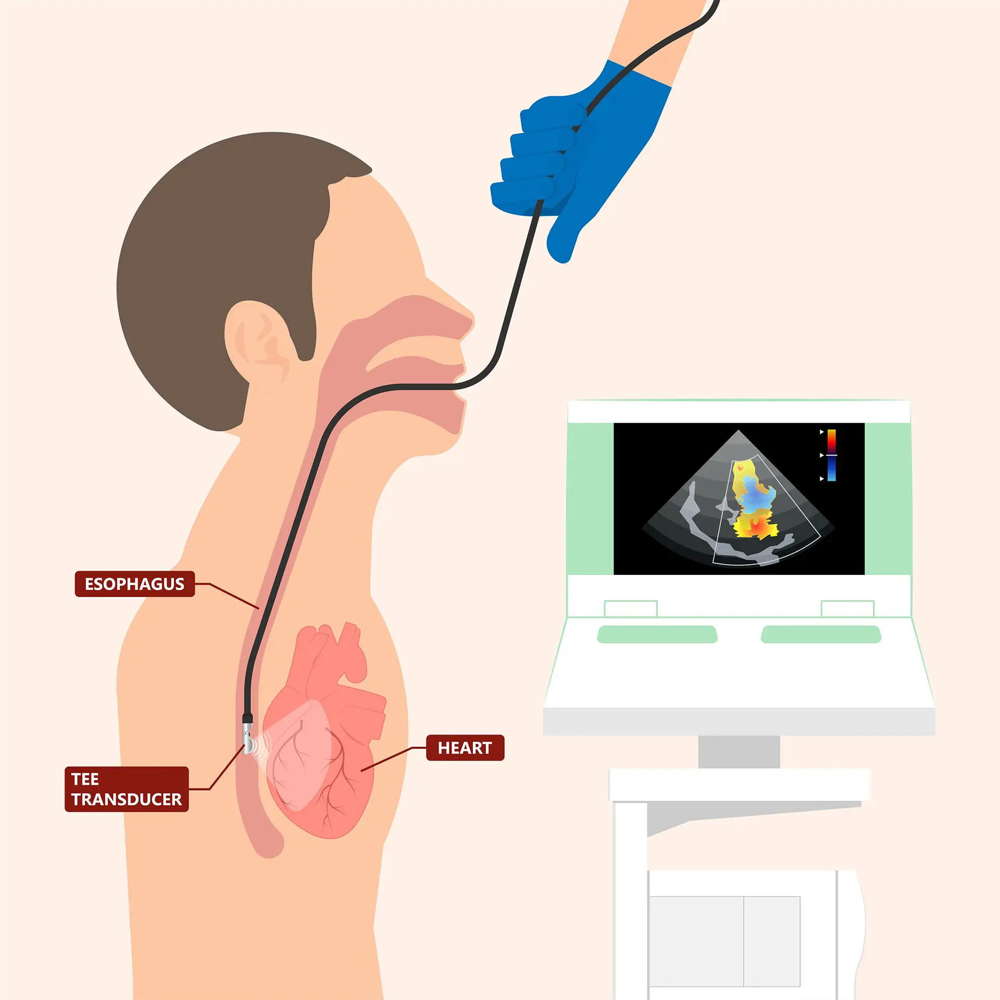
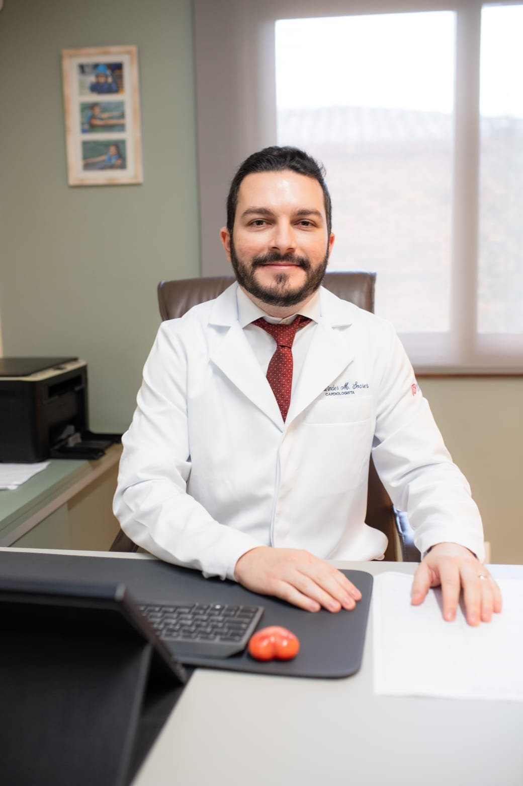
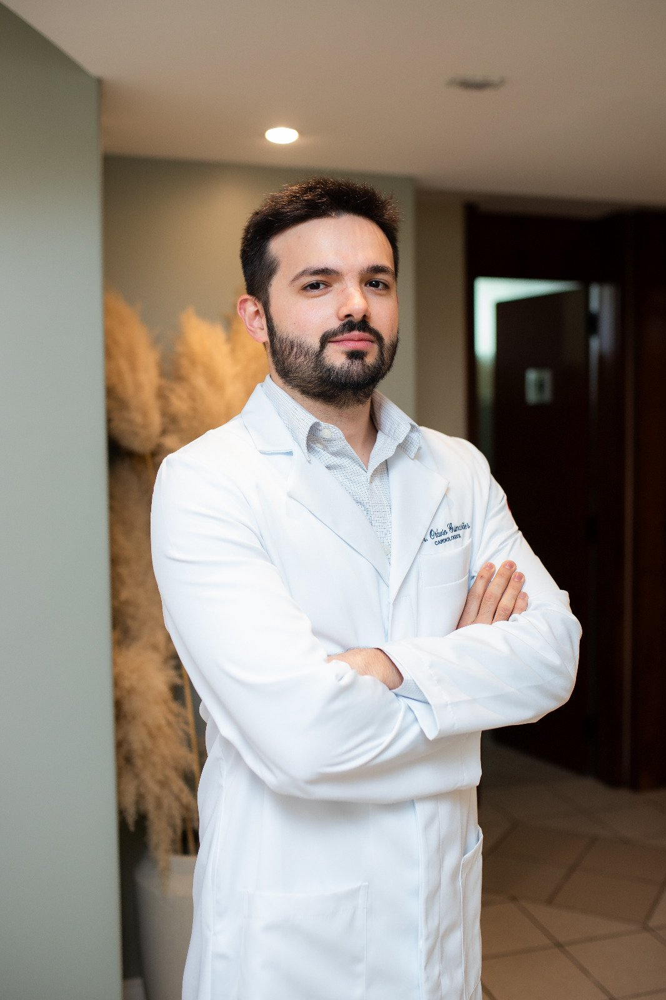

Dr. Daniel Ribeiro
Cardiologista · Ecocardiografista
Mestre e Doutor em Cardiologia pelo Instituto de Cardiologia do RS e Professor Adjunto de Cardiologia da UFPel. Título de Especialista em Ecocardiografia pela SBC.

Exames cardiológicos com equipamentos de última geração, equipe médica altamente especializada e laudo digital em até 1 hora. Cuidamos do seu coração com tecnologia e acolhimento.

Somos uma clínica de diagnóstico cardiovascular que une instalações modernas, um ambiente acolhedor e a experiência de uma equipe médica altamente qualificada.
Nossa força está na precisão técnica e na tecnologia dos equipamentos, promovendo diagnósticos confiáveis. Trabalhamos em equipe, colaborando com colegas médicos e proporcionando segurança nos resultados — contribuindo com o desenvolvimento da cardiologia na nossa região.
Do rastreamento de rotina aos estudos vasculares avançados. Realizados com excelência, responsabilidade e foco no seu bem-estar.

O “ultrassom do coração”: avalia câmaras, paredes, força de contração e fluxos sanguíneos em tempo real.
Saiba maisRápido e indolor, registra a atividade elétrica do coração. Resultado no mesmo dia, em poucos minutos.
Saiba mais
Monitorização do ritmo cardíaco e da pressão arterial no seu dia a dia, para diagnósticos que o consultório não capta.
Saiba mais
Avalia o fluxo nas artérias do pescoço e identifica placas que aumentam o risco de AVC.
Saiba maisEstuda veias e artérias das pernas para diagnosticar varizes, trombose (TVP) e obstruções arteriais.
Saiba mais
Imagens de altíssima resolução do coração a partir do esôfago, para diagnósticos detalhados.
Saiba maisEm uma das melhores regiões de Pelotas-RS, oferecemos exames rápidos e precisos em um ambiente acolhedor e acessível.
Aparelhos modernos com calibrações rigorosas e laudo digital em até 1 hora.
Leitos ergonômicos e transdutores de alta frequência para carótidas e membros inferiores.
Rampas e portas largas garantem mobilidade para idosos e pessoas com deficiência.
Vagas exclusivas na Rua Andrade Neves 4043, a menos de 200 m da Av. Dom Joaquim.
Atualização científica contínua, tecnologia de ponta e atendimento centrado no paciente fazem da Procardíaco referência na Zona Sul do RS.
Cardiologista · Ecocardiografista
Mestre e Doutor em Cardiologia pelo Instituto de Cardiologia do RS e Professor Adjunto de Cardiologia da UFPel. Título de Especialista em Ecocardiografia pela SBC.
Cardiologista · Responsável Técnico
Mestre e Doutor em Cardiologia pela UFRGS, docente do Programa de Pós-Graduação em Cardiologia da UFRGS e professor associado da Faculdade de Medicina da UFPel.

Cardiologista
Médico cardiologista pelo Hospital de Base do Distrito Federal (IHBDF), com atuação em avaliação clínica cardiovascular.

Cardiologista · Ecocardiografista
Formado pela UFPel, com residência em Cardiologia e Ecocardiografia pelo Instituto de Cardiologia — Fundação Universitária de Cardiologia do RS (ICFUC).
Para exames diagnósticos, realizamos atendimento particular e via convênios. A disponibilidade pode variar conforme o exame — fale conosco para confirmar o seu.
Para consultas médicas, atendimento exclusivamente particular. Não encontrou seu convênio? Confirme no WhatsApp.
Fale com a nossa equipe pelo WhatsApp e agende seu exame de forma rápida e sem complicação. Estamos prontos para atender você.
Pelotas é referência em saúde para toda a Zona Sul e recebe pacientes das cidades da região. Estamos em local de fácil acesso e com estacionamento gratuito — venha nos visitar ou fale conosco pelos canais abaixo.